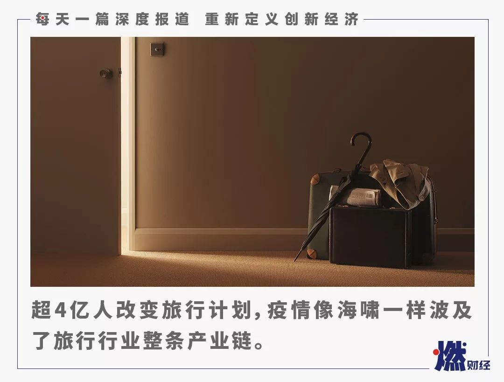
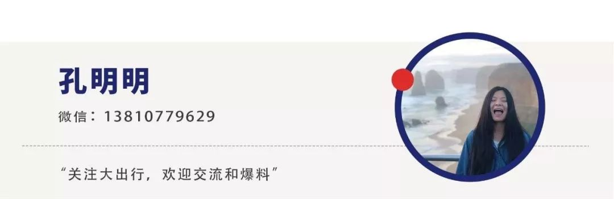

贝壳：若无二手房交易，七成中介撑不过半年
原文链接 备份链接 记者：吴波 “ 在无交易情形下，七成经纪公司明确表示现金流撑不过半年。 ” 今年初，“新冠”疫情来势汹汹，房地产行业也面临一次大考。此次疫情对于房地产行业具体影响，暂时只能通过数据测算和调查预估一二。 近日，贝壳研究院 …

《创新经济战疫指南》，是燃财经在新型肺炎疫情期间推出的特别栏目，关注创新经济企业遇到的新难题、商讨应该采取的新对策，希望能够帮助中小企业一起战胜挑战、把握机会。本文是第6期。查看前5篇请点击《哪些行业正在逆势爆发？》《中小企业生存指南》《差点倒下的生鲜电商又站了起来》《情人节档，也没了》《线下教育按下“暂停键”》。
作者 | 孔明明
编辑 | 周昶帆
原本，在很多旅游行业从业者的预期中，2020年春节应该是丰收的时节。但一场疫情改变了超4亿人的旅行计划，也给旅游行业超过1000万的从业者带来了巨大损失。
从1月23日武汉宣布“封城”后，民航局、铁路局、文化与旅游部等相关部门接连下发通知，在要求时间内可免费退票、停止团队旅游出行、停止包括出境游在内的“机+酒”服务、景区停止营业、禁止群体性聚集活动……每一天、每一条信息的公布，对旅游行业的所有从业者来说，都影响巨大。
在这期间，创业者们彻夜难眠、客服们每天连续工作超过12个小时、景区从业者欲哭无泪、旅行社导游在家等待复工、OTA平台安抚用户和供应商的同时还需要不断垫付巨额资金。
“全国有2万多家旅行社，40万到50万的从业人员，超过10万家酒店，接近100万间的住宿设施，几乎一夜之间全都陷入了停顿。总体算下来，光是旅游行业在春节期间就有1万亿的GDP损失了。酒店、景区商户、航空公司等有超过1000万的从业人员，将在未来三、四个月的时间没有工作。”同程集团创始人吴志祥在一次公益直播中称。
对于旅游业来说，受到人口聚集性、季节性、社交性等种种因素影响，春节出行和旅游基本能占旅游公司全年营收的1/4左右。据中国旅游研究院公布的数据显示，2019年春节假期全国旅游接待总人数4.15亿人次，实现旅游收入5139亿元。
“如果按照乐观估计，三个月绝收期减少60%，三个月恢复期减少30%来计算，全国旅游业预计今年损失接近3万亿元。”北京大学旅游研究与规划中心主任吴必虎在接受媒体采访时说道。
每个人都知道，疫情过后，旅游行业必定会迎来“报复性”爆发和增长。但据清华、北大联合调研的数据显示，34%的中小企业账上余额只能维持1个月，33.1%的企业可以维持2个月，17.91%的企业可以维持3个月。

中小企业账上余额能够维持的时间
来源 / 中欧商业评论
头部平台推出了针对供应商的低息贷款计划、投资人表示这是企业可以修炼内功和冷静思考的好机会、从业者重新思考商业模式并发力线上。同时，多位采访对象也向燃财经表示，他们正在计划与文化和旅游部沟通，请求政府给予更多支持和帮扶。
“春天总会来的”，在等待的煎熬中，他们一边艰难自救，一边安慰着自己。
***突如其来的疫情***
1月23日，51BOOK的CEO杨锐还在公司上班。
作为一家年交易额在40亿左右的机票在线预订平台，51BOOK在当天有近2000万交易额，已经提前完成了月度KPI，他和员工还为此在公司举办了一个小的庆祝仪式。公司2019年整体业务保持40%增长的前提下，他们对2020年充满了期待。
但所有的喜悦和期盼在23号晚上全部戛然而止。
1月23日晚，民航局宣布自24日起，此前已购买民航机票的旅客可免费自愿退票。当时杨锐和行业内的许多从业者紧急组建了一个微信群，在群内慌忙讨论对策。“那个时候我们只知道业务不能干了，会有大量的团队要取消机票，春节期间原来旺季要挣钱的想法完全落空，可能这都不是赔钱的问题，而是要考虑企业生死存亡的问题。”杨锐说。
在1月25日之前，四川某亲子游OTA平台创始人杨威和很多供应商正在准备迎接春节人流的到来。依照去年的估算，平台上整个春节仅四川旅游市场就有将近8万人员的流动，庙会、灯节、亲子活动都已经准备就绪，蓄势待发。
比机票平台稍晚一步，25日杨威和他的供应商们直接接到了来自当地政府的紧急电话。电话传传达的信息是，自1月25日起，四川省内所有景区及文化广电场所暂停营业，并同时停止大型群众型聚集活动等。
2019年，杨威的公司营收约2亿人民币，按计划，春节黄金期的营收会占到整年营收的30%。“最开始收到疫情消息时，没想到会这么严重，23日当天只是处理了一下武汉分公司的一些情况。”大年三十晚上，家人吃年夜饭，杨威独自呆在房间里打电话处理问题。
和杨威类似，去买票CEO张寒枫23日在朋友圈看到武汉“封城”消息之后，心里想着“糟糕，湖北景区肯定没法营业了”。作为一家为景区提供管理类SAAS软件的创业公司，经过4年的努力，他们已经拥有了2400多家景区客户。在春节前三天，他们每天的交易额流水在1.2亿人民币左右。
而在25日景区停业的通知下发后，去买票的客户陆续开始关闭景点，用户也陆续开始退票。26日他们的日流水已经跌至400多万元，“心都凉了”，张寒枫说，“我们有一个河北做庙会的客户，两个多亿的前期投入都打了水漂，甚至有一个花海景区的客户直接瘫倒了，整个人都傻眼了。”
图 / 视觉中国
对于旅游行业来说，人流密集、时效性都很重要，“就算疫情过去了，大家也没法连续放7天假，对景区来说，时间就是金钱，整个损失是没办法挽回的。”张寒枫说。
因为覆盖面积更广，大型OTA反应速度比行业从业者要更快一些。
1月20日，马蜂窝创始人陈罡还在公司处理一些重点项目的年终盘点，当时媒体上陆续出现关于疫情的报道，虽然“大众对疫情区域的认知还停留在初级阶段”，但陈罡意识到“这次疫情没那么简单”，当天晚上，陈罡还着重确认了春节期间客服、技术等部门的值班情况。
陈罡称，21日自己坐飞机回家的时候，看到首都机场很多人已经戴上了口罩，而他自己当天个人微博的私信量几乎达到平时的20倍，公司客服数据也显示，来电量迅速攀升。
多个旅游项目投资人、元钛长青基金合伙人游磬基称，1月21日，他已经开始跟投资的一些主要公司进行交流，提醒大家疫情的事情可能会对旅游业打击很大，要做好最坏打算。
携程相关业务负责人告诉燃财经，他们在1月20日已经开始启动内部预警，平时20几人的预警微信群名被改为“武汉肺炎预警”。21日中午，携程发布了针对疫情推出的“特殊退改政策”。之后，美团、飞猪、同程艺龙、马蜂窝等纷纷跟进。
从1月23日起，整个旅游行业仿佛被按下了“暂停”和“Hard模式”按钮。
***数百万张退订单***
“根本反应不过来，疫情发展太快”，皇包车旅行创始人孟磊说。
1月24日，文化和旅游部宣布暂停所有团队旅游及“机+酒”旅游产品。1月26日，文化和旅游部宣布包括出境游在内的所有团队游及“机+酒”服务暂停，“从24日开始，整个旅游行业都开始不睡觉，忙着退款。”孟磊说。
从1月24日到27日，“没日没夜地赶，端着饭碗还在开会，”孟磊说着说着想掉泪，“每天大家都是凌晨四五点睡，早上八九点多又爬起来。”对于主营业务是境外中文接送机、包车、定制游的皇包车旅行来说，晚上要跟境外合作伙伴沟通，白天跟客户沟通，“大家整体处于接近崩溃的状态”。
“你知道每天回微信回到手指头发热是什么感觉吗？而且我们合作的旅行社等商户每条信息都在问我：为什么不给我们退款？不退款的话我们怎么办？”孟磊说。
从初一到初三，本来仅安排了11个人值班的张寒枫，临时动员员工在家办公，退掉了300多万张景区门票，“当时把我们的研发人员都当售后来用，全都保持在线，主动联系客户是否需要我们在后台帮助他们进行批量退款”，短短几天，去买票的日流水从1.2亿跌至10万多元，“断崖式地下跌”。
杨锐称，初一他们的退票量约为15000张左右，初三翻了一倍，到初六他们每天积压的退票已经超过6万张，涉及上亿资金。
图 / 视觉中国
“对于整个旅游行业和全中国来说，这种状况都是史无前例的。”陈罡告诉燃财经。除了动员全公司力量缓解客服压力之外，他自己甚至在微博上回复了大多数来自用户的私信，一方面帮助他们操作退改，一方面争取他们的体谅和支持，“每天只能保持三至四个小时的睡眠。”
对OTA平台来说，更早的时候，他们已经开始感受到了退单的压力。1月20号晚上，国家卫健委高级别专家组组长、中国工程院院士钟南山接受央视新闻采访时第一次对外透露：“根据目前的资料，新型冠状病毒肺炎肯定存在人传人。”采访播出后，客服电话、退订单瞬间开始涌来。
“最开始酒店退单是一单一议，客户打进来，我们跟酒店协商”，携程CEO孙洁称。随着疫情发展，波及范围很快从武汉扩展至全国，客服电话全线占满，“一开始刚上量的时候，几千个人在线排队，大家都骂为什么携程电话打不进去”，携程相关业务负责人称。
22日携程连夜上线酒店“安心取消保障”计划，让用户可以自助线上取消，不需要经过人工客服。对这些参与计划的酒店，携程许诺会在主APP中对他们做重点推荐，在疫情结束后，给予包括疫后“爱心酒店”标签和亿级营销资源，目前已有40万家酒店参与这一计划。
当时业务还没有蔓延到海外，“但我们也做了假设，几乎联系了所有大的酒店集团，最终全球六大集团率先加入，其他海外本土酒店也会陆续跟上”，孙洁说。
据了解，春节期间飞猪平台客服热线峰值时达到去年同期10倍。来自携程的数据也显示，截止到1月29日携程平台收到的退改诉求总量、咨询总量都达到数百万的量级，相较去年春节，增幅达到405%，最高峰值时增幅达到650%，客服上班时间平均为13个小时。同程艺龙相关负责人表示，为了应对疫情带来的退订潮，同程艺龙几乎所有可用的客服人力全部到岗。
但这些依然不能缓解来自数百万张退订单的客服压力。
“相关部门在疫情爆发后的数天内连续推出了11项各种政策，每一次都会引发新的退改订单潮，订单数量成倍增长，全部处理完成需要时间”，携程相关负责人称，“由于免费退票的特殊性，从提交、审核再到退款，需要一定的甄别时间，当退订量突然集中爆发，航空公司以及其他相关企业甚至还没来得及拟定政策时，层层审核积压下来，时间只会更长。”
“很多客服在接电话之前，会先把耳机离开耳朵，在客人骂完之后再解释，甚至有客服会先自己给用户退款”，上述负责人说，直至现在，“受海外航空公司停飞、各国政府陆续出台限制中国公民入境政策影响，国际机票退改需求依然居高不下，预计需要1～2周才能清理完毕。”
*****自救，自救，自救*****
退订单依然没有停止，行业暂时停摆，现金流是这个时候所有企业关注的重点。
此前，去哪儿网CEO陈刚在接受媒体采访时表示，“如今不仅平台方面现金流吃紧，代理商乃至航空公司同样吃紧”，去哪儿网各业务线已经为消费者即时退款垫资近十亿元，陈罡称马蜂窝为消费者退订垫资也已经超5亿人民币。
杨威则称，如果6个月后公司依然不能正常运转，准备开始走公司清算流程。“行业上下游企业资金几乎全面锁死，悲观、焦虑、无助正在蔓延到每一个旅游人。”杨锐说。
针对各行业所面临的困难，地方政府陆续开始推出补贴和扶持政策，但多位受访者表示，这些政策目前还很难快速落地。
“只能先自救”，杨威说。
从1月26日开始，杨威召集了公司高管，连续在线开会，并在1月30日给所有员工发送了一封邮件，通知要对公司员工进行优化，暂停2020年原定的新业务，能调岗的员工可以选择调岗，否则自己选择离职。“我们也没有办法，如果不这么做，公司直接就完了。”目前，他的公司已经优化了近1/3左右的人员。
另一方面，杨威的公司以前更多依赖于线下，现在考虑慢慢把业务往线上进行转变，根据C端用户需求开发一些产品，“对原有的商业模式进行一些变化。”
在1月28日差不多处理完公司所有的退订单之后，孟磊终于缓了一口气，开始思考如何自救、如何安排员工、如何发放工资、怎么还银行贷款、如何筹措资金等种种问题。“从1月28号到现在，我每天的工作就是跟投资人、合作伙伴、员工们不停地聊”。
“目前银行有可能能延期贷款还款，但合作伙伴大部分来自国外，很难沟通”，孟磊说，“跟员工商量缓发工资，有的员工告诉我他们家刚生完二胎几个月，这个时候你还好意思说什么？只能说我给你发了。你还能说第二句话吗？你不能说。”
虽然皇包车旅行已经完成C+轮融资、有十几个投资方，但“目前投资人出手的可能性很低，因为他们有几百个投资项目，帮谁不帮谁？”孟磊说，在这个过程中，让他最难受的事情是，“如果有些事情通过努力能够改变，我们还可以努力。但现在没有一条缝可以留给我们。”
图 / 视觉中国
游磬基也认为，旅游行业上半年基本所有的投资会被冰封，没人敢出手，即便有人出手，也是别的行业手握现金流的公司，但那个时候“是收购而不是投资”。“对于旅游企业来说，如果在这个过程中做得非常煎熬，我建议有被收购的机会就赶紧卖掉”，游磬基说。
张寒枫目前想到的自救方法是帮助景区做打折预售，回收一部分现金流；或者有IP化的景区，可以通过线上营销或者互动游戏，来进行获客。针对不同的类别，去买票把客户划分为不同类别，有室内、室外、活动主题、滑雪等，给到他们不同的活动方案。“只有你的客户在线，公司才能在线”。
在华住集团创始人季琦2月2日发给员工的内部信中，季琦称，目前华住的应对之策是不裁员、不鼓励关店歇业等。但这一应对之策是以2-3个月左右疫情基本结束或者得到有效控制为假设。
季琦称，在正常情况下，华住门店仅一线员工的人力成本每人每月要6000元左右，10万员工，每月是6个亿。假如疫情进一步恶化，或疫情时间超过3个月以上，华住在用工问题上有可能需要进一步调整。比如调休、部分上班、仅发基础工资、暂缓支付社保养老保险等。

***熬下去，活下去***
与此同时，头部平台也在为行业做力所能及的工作。
在全国范围内的退订需求开始出现后，携程启动了1个亿的保障金计划。1月26日文化和旅游部宣布全国暂停境内外跟团游和“机票+酒店”半自助旅游产品后，携程把保障金金额提到2亿，携程下线2月29日前的此类产品，此前已经下单的自由行、玩乐、用车、定制游、景区等产品无损全退。消费者退款均由携程垫付，供应商根据自己的损失提交证明材料，携程承担成本部分的损失；1月29日，携程宣布对旗下8000家携程旅行社加盟店，宣布减免三个月管理费，延期任务额度。
有从业者表示，对于携程要求供应商提供的损失证明材料，供应商们很难提供，并且担心携程会不退真金白银而是以广告费方式返还，“但我撑不到那天现金流已经断了。”携程方面则表示，损失证明材料是帮助供应商定损，并不难提供，例如机票、酒店等都有预订证明。
也有从业者表示，OTA们追求的“尽一切可能无损退订”，是在追求更多的企业社会责任，事实上抬高了整个行业的经营门槛，也会让供应商与平台之间，就新的规则开始长期的碰撞与沟通。
2月5日，携程宣布向其平台上的机票、酒店、旅游度假等领域合作伙伴推出“同袍”计划，包括10项具体措施，投入10亿元合作伙伴支持基金和100亿元额度小微贷款，帮助供应商为用户垫付退款，以此来缓解其资金压力；2月6日，华住集团宣布紧急开放低息贷款，面向已开业一年以上且仍在营业的旗下酒店，华住可提供单店最高50万元的低息贷款支持。
而对于很多旅游行业的从业者来说，如何解决眼前生计也是很大的问题。有旅行社创始人表示，“导游基本没有底薪，一些老导游可以在家卖特产维持生计，而新导游可能会没有任何收入，”也有人表示，“这行业太看天吃饭了，甚至想转行”。而在2月5日，文化和旅游部推出向旅行社暂退部分旅游服务质量保证金的方案，对旅行社行业从业者来说，无疑是一个利好。
在梁建章看来，旅游行业在疫情问题中的第一阶段，是处理用户服务、跟进海量订单的阶段；而第二个阶段是惨淡时期，“如何保证队伍和公司财务状况的稳定性，是企业在这一阶段需要面对的问题。”梁建章说。
在17年前的非典时期，携程几乎保留了所有员工，采用员工轮休的方式进行运转，同时，趁着业务低迷的时间，携程在内部举行了大量的培训和业务流程优化，提升员工的能力。而在非典结束之后的第一个月，旅游行业就迎来了“报复性增长”。当年12月，携程成功在纳斯达克敲钟。
“参考非典的情况，疫情之后旅游行业一定会迎来业务井喷。但这之前一定会出现有些公司业务停摆和资金断流的情况，各方面都在考验企业自身的综合实力。”杨锐说。
对于51BOOK来说，2015年机票代理行业的“提直降代”政策，影响甚至要大过这次疫情。“那次对行业的影响无亚于地震，2/3的企业基本被清理出局，而疫情只是阶段性的。在2015年51BOOK逆市融资4.38亿人民币，目前公司账上仍有上亿现金。理论上只要我们把业务稳住，把客户服务好、留住，至少能扛一年。”

图 / Pexels
杨锐告诉燃财经，从这次疫情中，他们也发现公司有很多地方需要反思。比如对于业务峰值的处理预估不够、一些业务板块抗风险能力不够等，“未来我们在业务上会加强跨行业的投资布局和海外业务投入，来对冲旅游行业的风险。”
“对于很多旅游公司来说，这次疫情也是试金石”，游磬基认为。在他看来，旅游业的现金流管理因为有大量的预付和预收款，比较复杂，跟一般的制造业和服务业都不一样，“旅游行业的创始人，绝大部分人不太理解自由现金流的概念是什么，过去五年倒闭的很多创业公司也是死在这一点上”，游磬基说，“照现在这种情况，如果疫情依然不能得到有效控制，即便是大公司的现金流都有可能支撑不了半年。”
吴志祥在公益直播课上称，“非典”时期，在所有的线下旅游门店都歇业的情况下，同程反而成为了一个旅游从业者非常喜欢登录和聚集的平台。“危机对每一个企业都是平等的，相当一部分企业会在野火燃烧的过程中死去，但只有生命力更强的树木，它才可能长出新芽。”
1月27日晚上，在基本处理完公司所有退订单之后，孟磊终于有空开始面对公司现状，“人在忙着的时候，只顾着组织大家退款，但等问题基本解决后，开始算手头钱的时候，我基本就崩溃了”。
成立于2014年的皇包车旅行，在质疑和重重困难中走到现在，直到2019年2月份刚刚开始盈利。孟磊原本以为，2020年会是公司收获的一年。
那天半夜，35岁的孟磊跪在山东老家地上，回顾从20岁开始创业的这些年，感到五味杂陈，委屈又心力交瘁地哽咽了很久。1月28日，他坐上了回北京的高铁，想着“无论如何还是得扛下去，能扛一天是一天。”
虽然还未看到能够解决问题的“那条缝”，但他依然努力在找寻各种解决办法。“疫情会阶段性地影响行业，但不会摧毁行业，因为需求还在、痛点还在、机会还在。现在能做的就是养精蓄锐、练好内功，等着迎接疫后全民旅行的‘报复性’反弹机会。”孟磊说。
*题图来源于视觉中国。应受访者要求，文中杨威为化名。
— 征集 —
欢迎加入“燃财经创新经济战疫计划”。
疫情之下、行业巨变，为了帮助创新经济企业战胜挑战、把握机会，燃财经推出“创新经济战疫计划”。该计划包含三部分：栏目报道、线上沙龙、行业社群。
栏目报道部分和线上沙龙部分，征集希望给创新经济献计献策、共克时艰的创业者和投资人，参加报道、讨论和互助。欢迎在评论区留言或在后台私信我们，请注明“创业者”或“投资人”。
行业社群部分，征集关注此话题、愿意参与社群的读者，欢迎在后台私信我们，注明“计划”，入群之后我们将提供讨论平台、沙龙直播等后续服务。



你的旅游计划受到了哪些影响？退改签顺利吗？
欢迎在评论区留下你的故事，我们会在点赞前三（超过20个）的评论里挑选一位网友，送出爱奇艺季卡一张****。文章转载请点击公众号菜单“转载合作”。
一手资讯/硬核报告/每日红包/线下活动！就差你了！快加微信rancaijing02回复“读者”一键上车！


原文链接 备份链接 记者：吴波 “ 在无交易情形下，七成经纪公司明确表示现金流撑不过半年。 ” 今年初，“新冠”疫情来势汹汹，房地产行业也面临一次大考。此次疫情对于房地产行业具体影响，暂时只能通过数据测算和调查预估一二。 近日，贝壳研究院 …
原文链接 备份链接 2020庚子年春节，武汉封城、全国防控，商场歇业、餐厅关门……肆虐的疫情打破了中国人习以为常的普通生活。一批又一批医护人员，从全国各地赶往武汉。 疫情期间，除了政府和医疗机构外，中国互联网公司也都纷纷出手。阿里10亿物 …
原文链接 备份链接 *************▲*************玉龙雪山脚下的玉湖村。 （受访者供图/图） 全文共*4244*字，阅读大约需要10分钟。 在求助信里，我写了四样求支援的物品，是因为我只知道这四样。而实际情况 …
原文链接 备份链接 疫情蔓延令本就身处经济逆周期的中小企业雪上加霜，尽管驰援举措已开始出台，但他们企盼更大规模的政策扶持，比如减费降税 图/ IC 文 |《财经》记者 张颖馨 张威 编辑 | 袁满 “坐了一天，小鸟飞过10只，行人8人， …
原文链接 备份链接 01.02.2020本文字数：1170，阅读时长大约2分钟 导读：数百万甚至更高的订单量退改，瞬时10倍电话进线量，13小时极限加班值等数字，或许会铭刻于旅游业者2020年的春节记忆中。 作者 | 第一财经 乐琰 根 …